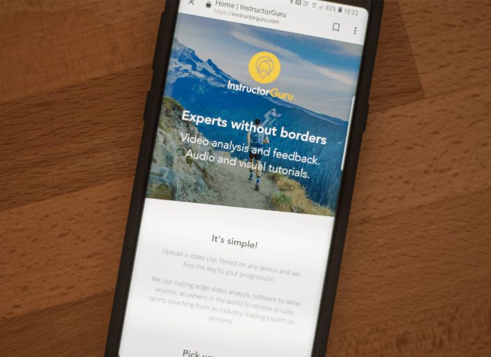

Pioneering Remote Sports Coaching through Technology
Before diving into the healthcare sector, my initial inspiration came from my extensive experience in sports coaching. Recognising the repetitive nature of coaching techniques across various sports, I envisioned using technology to introduce efficiencies in this domain. This led to the birth of an idea: leveraging human pose estimation to automate sports coaching.
To test the market for this business concept required answering two main questions; was it technically feasible? and was there sufficient consumer demand?
To test the market for the product before we had the technical capabilities to deliver the service with AI, I set about recruiting the top coaches across various disciplines of technical sports including top tier coaches in golf, tennis, cricket, skiing, snowboarding, climbing, yoga and running. We created a simple yet effective web app under the brand Instructor Guru and began selling remote coaching.
The concept was that clients would film themselves for 30 seconds performing the activity, upload the video footage to the app, pay for the service, and within 48 hours they would receive a 20 minute analysis of their technique, along with detailed steps to improve, and pre-recorded drills or exercises to complete.
The service was marketed on a small budget, and within two months we had sufficient evidence to confirm that there was demand for remote coaching, though there were several barriers and downsides to the approach.
Firstly, while we are able to offer the high level coaches at a fraction of their typical coaching rate, the cost was still between £30-50 per analysis, making it a high ticket item for many amateur athletes. Secondly, for many of the activities it was challenging to capture the footage of themselves, and often required a willing volunteer to film.
Our experiments led us to determine that an AI powered coach, if focused on activities carried out in the home, or fixed locations such as a driving range for golf, able to identify and suggest fixes for the most common 80% of issues, could be delievered at sufficiently low-cost, and would generate high demand.
Our first foray into the field of AI began with a partnership with the Centre of Excellence for Mobile and Emerging Technologies (CEMET). Together, in 2019 we embarked on a project to test if pose estimation could automate yoga coaching. The prototype we developed was capable of identifying a person in a pose, discerning deviations from the ideal, and highlighting areas for improvement.
Although we couldn't progress to generating cues for improvement due to funding constraints, this prototype sparked interest among medical professionals, leading to a pivot towards healthcare applications. It demonstrated the vast potential of pose estimation in not just sports coaching but in broader domains, laying the groundwork for our subsequent ventures in medical technology.
This journey from a sports-focused prototype to a healthcare innovation highlights the adaptability and wide-reaching impact of emerging technologies like pose estimation. It's a story of how a simple idea, nurtured through partnerships and collaborative efforts, can evolve into a solution with far-reaching benefits across industries.